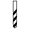

Funktionen im 3D Viewer
Standardausdehnung:
Durch Klick auf diesen Button kehrt man zur ursprünglichen Ausdehnung zurück.Zoomen:
Hineinzoomen (wenn kein Mausrad vorhandenHinauszoomen (wenn kein Mausrad vorhanden)
Infofenster:
Informationen über Web-Applikation und Maussteuerung in Form eines Pop-up Fensters. Alternativ auch über die Tastatur mit der Taste „I“ abrufbar.Speichern:
Die aktuelle Ansicht des 3D-Modells kann als Image (*.png) exportiert und gespeichert werden.Überhöhung:
Die vertikale Überhöhung kann mithilfe eines Schiebereglers stufenlos zwischen 1- und 5-fach eingestellt werden.Liste der Layer:
Über diesen Button kann die Sichtbarkeit der einzelnen Layer gesteuert werden. Ist ein Layer angehakt, ist er sichtbar.Wireframe-Modus:
Die 3D-Flächen sind als Triangulationsflächen abgespeichert. Um diese darzustellen, kann man das 3D-Modell auch als Wireframe anzeigen lassen. Dazu drückt man auf der Tastatur die Taste „W“. Erneutes Drücken der Taste „W“ kehrt zur Vollfarben-Darstellung zurück.Informationen zu den geologischen Einheiten:
Neben der Legende im linken Bereich lassen sich Informationen zu Alter, Mächtigkeit und Lithologie der geologischen Einheiten anzeigen. Hierfür muss der Mouse-Zeiger über das „info“-Feld geführt werden.
Abfragetools im 3D Viewer
Identify - Identifizieren:
Durch Klick mit der linken Maustaste auf das 3D-Modell erscheint ein Pop-Up Fenster mit Informationen zur angeklickten Position (Geologische Einheit, Topographische Höhe etc.)Borehole - Virtuelles Bohrprofil:
 Durch Klick mit der linken Maustaste auf das 3D-Modell wird für den ausgewählten Standort ein virtuelles Bohrprofil generiert. Die Darstellung des virtuellen Bohrprofils erfolgt am linken Rand des Viewer-Fensters.Slicer – Virtueller Profischnitt:
 Mithilfe des Slicers können aus dem dargestellten 3D Modell anhand von Schiebereglern virtuelle Profilschnitte in x-Ebene (Nord-Süd-Schnitt)
und y-Ebene (Ost-West-Schnitt) abgefragt werden.
Mithilfe des Slicers können aus dem dargestellten 3D Modell anhand von Schiebereglern virtuelle Profilschnitte in x-Ebene (Nord-Süd-Schnitt)
und y-Ebene (Ost-West-Schnitt) abgefragt werden.